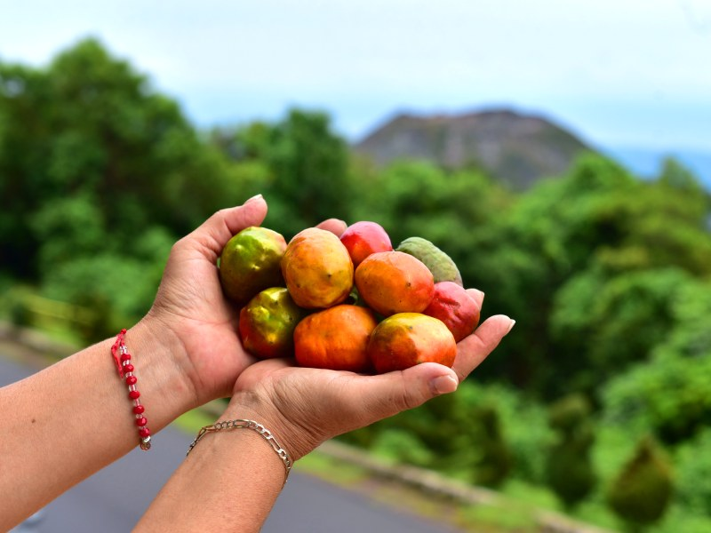
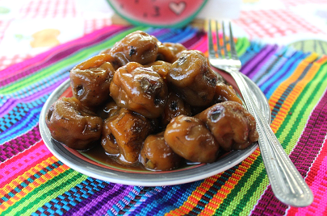
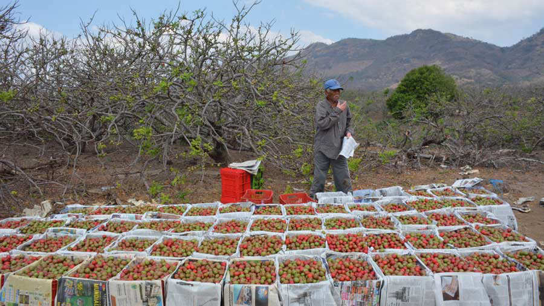

Degustación de jocotes
Los visitantes pueden degustar diferentes variedades de jocote y conocer los sabores característicos de este fruto, uno de los productos tradicionales de El Salvador.

El Festival del Jocote es una celebración que destaca uno de los frutos más representativos de El Salvador. Durante el festival, los visitantes pueden disfrutar de diferentes variedades de jocote, comidas, bebidas y productos elaborados con este fruto, además de conocer las tradiciones y costumbres de las comunidades salvadoreñas.

Disfruta algunas de las experiencias que hacen especial esta celebración salvadoreña.
Los visitantes pueden degustar diferentes variedades de jocote y conocer los sabores característicos de este fruto, uno de los productos tradicionales de El Salvador.
Durante el festival se pueden encontrar diferentes alimentos, dulces, bebidas y preparaciones elaboradas a base de jocote, combinando la gastronomía con las tradiciones locales.

El festival también permite conocer productos elaborados por emprendedores y habitantes de la zona, promoviendo la cultura, el trabajo local y las tradiciones salvadoreñas.
El Festival del Jocote se relaciona especialmente con las zonas productoras de este fruto, donde los visitantes pueden disfrutar de la gastronomía, cultura y actividades de las comunidades.

San Lorenzo es conocido por su producción de jocote y por las actividades relacionadas con este fruto. Es uno de los lugares donde se puede conocer más sobre la tradición y producción local.
Ubicación: San Lorenzo, Ahuachapán, El Salvador
📍 Ver ubicación
Esta variedad de jocote es apreciada por su sabor y características. Las zonas productoras permiten conocer el cultivo y las diferentes formas de consumir este tradicional fruto.
Ubicación: Ahuachapán, El Salvador
📍 Ver ubicación
Diferentes comunidades de El Salvador cultivan jocote y mantienen viva la tradición de aprovechar este fruto en alimentos, bebidas y productos que forman parte de la gastronomía nacional.
Ubicación: El Salvador
📍 Ver ubicaciónElige el día del evento, selecciona una tour operadora, un guía o el transporte, indica el número de personas y agrega tu reserva al carrito.
El festival se realiza un domingo de marzo en el parque central de San Lorenzo, desde la mañana. La fecha exacta se confirma cada año, elige el domingo del festival.
Día en el festival con degustación de jocotes y productos elaborados con este fruto.
$15 por persona
Recorrido por las zonas de cultivo antes de llegar al festival, con explicación de la producción local.
$25 por persona
Recorrido por los puestos del festival para probar platillos, dulces, conservas y bebidas elaboradas con jocote.
$20 por persona
Acompañamiento local durante el día del festival.
Un guía de la comunidad te acompaña por las fincas y te explica el cultivo y las variedades.
$20 por grupo
Ideal para visitantes extranjeros. Explicaciones en dos idiomas durante todo el recorrido.
$40 por grupo
Acompañamiento por los puestos de emprendedores y artesanos de la zona, con explicación de cada producto.
$25 por grupo
Llega a San Lorenzo sin preocuparte por manejar.

Viaje de ida y vuelta hasta San Lorenzo, con salida temprano por la mañana.
$12 por persona

Vehículo con conductor disponible durante todo el día del festival.
$55 por vehículo

Para familias grandes, grupos de amigos o excursiones. Reserva con anticipación.
$130 por vehículo